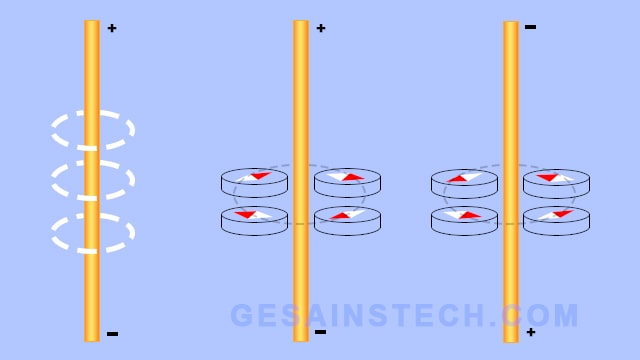
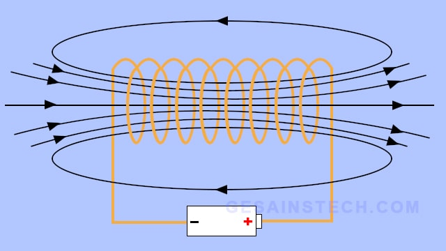
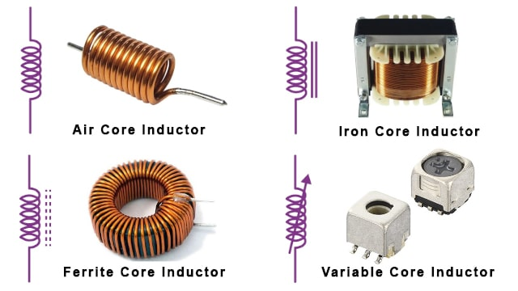

Pengertian
Induktor adalah komponen elektronika pasif terdiri dari lilitan kawat penghantar yang mampu menyimpan energi dalam bentuk magnetik ketika diberi arus listrik. Kawat penghantar berinsulasi dililitkan atau digulung sehingga membentuk kumparan dan jadilah induktor. Induktor banyak digunakan untuk rangkaian elektronika yang arus dan tegangannya berubah-ubah. Induktor juga banyak digunakan untuk mengurangi atau mengontrol lonjakan listrik dengan cara menyimpannya dalam bentuk energi sementara di medan magnet, dan akhirnya dilepaskan kembali ke sirkuit.
Besarnya kemampuan induktor dalam menyimpan energi ditentukan dengan induktansinya. Satuan internasioal untuk induktansi adalah Henry (H), diambil dari seorang ilmuwan yang bernama Joseph Henry atas jasa besarnya dalam ilmu magnetism. Induktansi memiliki simbol L yang ditujukan untuk menghormati fisikawan ternama Heinrich Lenz. Induktansi diukur dari jumlah gaya elektromotif akibat perubahan dari arus terhadap waktu. Contohnya adalah sebagai berikut, induktor yang memiliki induktansi 1 Henry, menimbulkan gaya elektromotif 1 volt, terjadi saat arus dalam induktor berubah dengan kecepatan 1 ampere setiap detik/sekon.
Konstruksi Induktor
Induktor memiliki konstruksi yang terdiri dari lilitan atau gulungan yang terbuat dari bahan konduktor dan inti. Kawat tembaga berinsulasi adalah jenis bahan konduktor yang paling banyak digunakan untuk lilitan. Kemudian, untuk inti biasanya menggunakan bahan feromagnetik atau tidak menggunakan apapun (air core). Kelebihan menggunakan bahan feromagnetik adalah kemampuan permabilitas yang tinggi sehingga meningkatkan medan magnet, dan pada saat yang sama membatasinya secara dekat dengan induktor. Dengan begitu, pada akhirnya penggunaan bahan feromagneik untuk inti akan menghasilkan induktansi yang lebih tinggi.
Selain itu, baja listrik laminasi juga dapat digunakan sebagai bahan inti, umumnya digunakan untuk yang berfrekuensi rendah, seperti transformator. Penggunaan baja listrik laminasi untuk inti juga dapat membantu mencegah arus eddy. Sedangkan untuk yang frekuensi tinggi, banyak menggunakan bahan ferit lunak sebagai intinya, ini dikarenakan bahan ferit tidak menyebabkan kerugian daya pada frekuensi tinggi. Bahan ferit mempunyai lengkung histeresis yang sempit dan resistivitasnya yang tinggi sehingga mencegah arus eddy.
Cara Kerja Induktor
Ketika kawat penghantar diberi arus listrik maka kawat akan menghasilkan medan magnet di sekitarnya. Ini dapat dibuktikan dengan cara menempatkan kompas di sekitar kawat yang diberi arus listrik. Jadi, kompas nantinya akan bergerak menyelaraskan arah medan magnet, sedangkan jika arah arus listrik diubah maka kompas juga bergerak berlawan arah dari yang sebelumnya. Besarnya medan magnet juga berbanding lurus dengan besarnya arus listrik yang melewati kawat. Artinya, semakin besar arus listrik yang melewati kawat, semakin besar pula medan magnetnya.
Pada saat kawat penghantar dililit/gulung hingga menjadi kumparan, dan kawat dialiri arus listrik maka akan tercipta medan magnet yang lebih besar dan lebih kuat. Medan magnet yang terbentuk akan menyimpan energi. Kemudian, saat arus diputus, energi yang tersimpan dalam bentuk medan magnet akan dikonversi menjadi arus listrik, saat medan magnet sudah tidak tersedia maka arus listrik juga tidak akan ada atau berhenti mengalir. Proses konversi medan magnet menjadi listrik pada induktor berlangsung sangat cepat.
Jadi, pada dasarnya induktor akan selalu menjaga arus tetap sama, dengan kata lain induktor tidak menginginkan perubahan. Oleh karena itu, pada saat induktor dinaikkan arus listriknya, induktor akan berusaha menghentikannya dengan cara kekuatan yang berlawanan, tetapi setelah medan magnet sudah dalam keadaan maksimum, induktor akan berhenti melawan, dan induktor bekerja layaknya kawat biasa. Namun, ketika arus listrik dikurangi, induktor juga akan melawanya, dengan cara mendorong elektron keluar sehingga arus listrik tetap sama.
Fungsi Induktor
1. Menyimpan energi listrik dalam bentuk energi magnet.
2. Untuk meningkatkan konverter sehingga meningkatkan output tegangan DC.
3. Sebagai pemblokir arus AC dan hanya mengizinkan arus DC.
4.Untuk menyaring dan memisahkan frekuensi yang berbeda.
Jenis-Jenis Induktor
Menurut bahan pembuat intinya, induktor dapat dibagi menjadi empat, yaitu:
1.Induktor dengan inti udara (air core)
2.Induktor dengan inti besi (iron core)
3.Induktor dengan inti ferit (ferrite core)
4.Induktor dengan nilai konduktansi yang dapat diubah, yaitu inti variabel (variable core)
